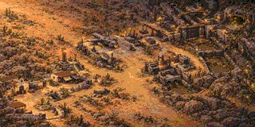
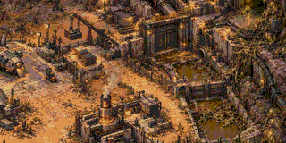
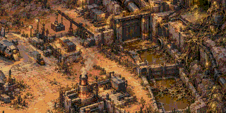

PLAGUEFALL / PROVAS OFFLINE / JOGO SEM ALTERAÇÕES
Avaliação em resolução nativa
Cada imagem tem 320 × 160 pixels. RGB333, uma paleta por tile de 8 × 8, sem dithering adicional.
Conversões técnicas da pintura existente; não representam arte final nem captura do emulador.
Mapa inteiro / 2 paletas

A composição fica congestionada.
800 tiles · 25600 B de padrões
Erro de cor: 11.255
Trecho ampliado / 2 paletas

Edifícios maiores preservam as formas.
800 tiles · 25600 B de padrões
Erro de cor: 11.71
Mesmo trecho / 3 paletas

A textura ainda disputa os pixels.
800 tiles · 25600 B de padrões
Erro de cor: 11.659